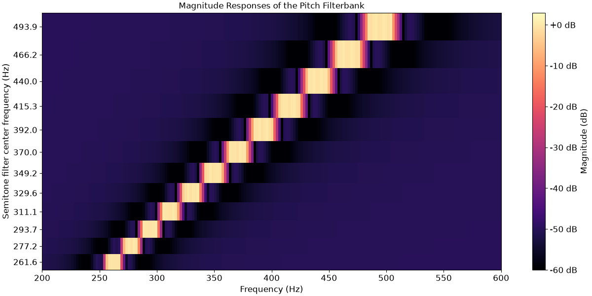

librosa.filters.semitone_filterbank
- librosa.filters.semitone_filterbank(*, center_freqs=None, tuning=0.0, sample_rates=None, flayout='ba', **kwargs)[source]
Construct a multi-rate bank of infinite-impulse response (IIR) band-pass filters at user-defined center frequencies and sample rates.
By default, these center frequencies are set equal to the 88 fundamental frequencies of the grand piano keyboard, according to a pitch tuning standard of A440, that is, note A above middle C set to 440 Hz. The center frequencies are tuned to the twelve-tone equal temperament, which means that they grow exponentially at a rate of 2**(1/12), that is, twelve notes per octave.
The A440 tuning can be changed by the user while keeping twelve-tone equal temperament. While A440 is currently the international standard in the music industry (ISO 16), some orchestras tune to A441-A445, whereas baroque musicians tune to A415.
See [1] for details.
- Parameters:
- center_freqsnp.ndarray [shape=(n,), dtype=float]
Center frequencies of the filter kernels. Also defines the number of filters in the filterbank.
- tuningfloat [scalar]
Tuning deviation from A440 as a fraction of a semitone (1/12 of an octave in equal temperament).
- sample_ratesnp.ndarray [shape=(n,), dtype=float]
Sample rates of each filter in the multirate filterbank.
- flayoutstring
If ba, the standard difference equation is used for filtering with
scipy.signal.filtfilt. Can be unstable for high-order filters.If sos, a series of second-order filters is used for filtering with
scipy.signal.sosfiltfilt. Minimizes numerical precision errors for high-order filters, but is slower.
- **kwargsadditional keyword arguments
Additional arguments to the private function _multirate_fb().
- Returns:
- filterbanklist [shape=(n,), dtype=float]
Each list entry contains the filter coefficients for a single filter.
- fb_sample_ratesnp.ndarray [shape=(n,), dtype=float]
Sample rate for each filter.
Examples
>>> import matplotlib.pyplot as plt >>> import numpy as np >>> import scipy.signal >>> semitone_filterbank, sample_rates = librosa.filters.semitone_filterbank( ... center_freqs=librosa.midi_to_hz(np.arange(60, 72)), ... sample_rates=np.repeat(4410.0, 12), ... flayout='sos' ... ) >>> magnitudes = [] >>> for cur_sr, cur_filter in zip(sample_rates, semitone_filterbank): ... w, h = scipy.signal.sosfreqz(cur_filter,fs=cur_sr, worN=1025) ... magnitudes.append(20 * np.log10(np.abs(h))) >>> fig, ax = plt.subplots(figsize=(12,6)) >>> img = librosa.display.specshow( ... np.array(magnitudes), ... x_axis="hz", ... sr=4410, ... y_coords=librosa.midi_to_hz(np.arange(60, 72)), ... vmin=-60, ... vmax=3, ... ax=ax ... ) >>> fig.colorbar(img, ax=ax, format="%+2.f dB", label="Magnitude (dB)") >>> ax.set( ... xlim=[200, 600], ... yticks=librosa.midi_to_hz(np.arange(60, 72)), ... title='Magnitude Responses of the Pitch Filterbank', ... xlabel='Frequency (Hz)', ... ylabel='Semitone filter center frequency (Hz)' ... )
